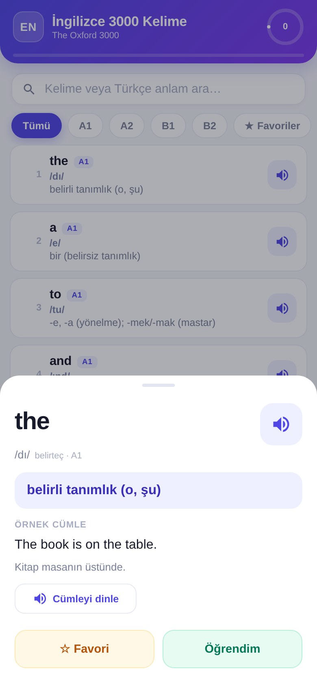
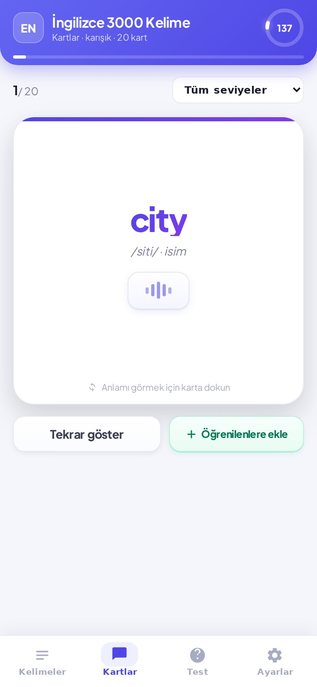
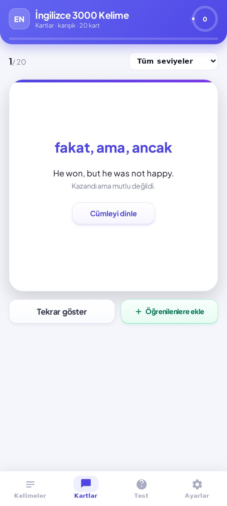
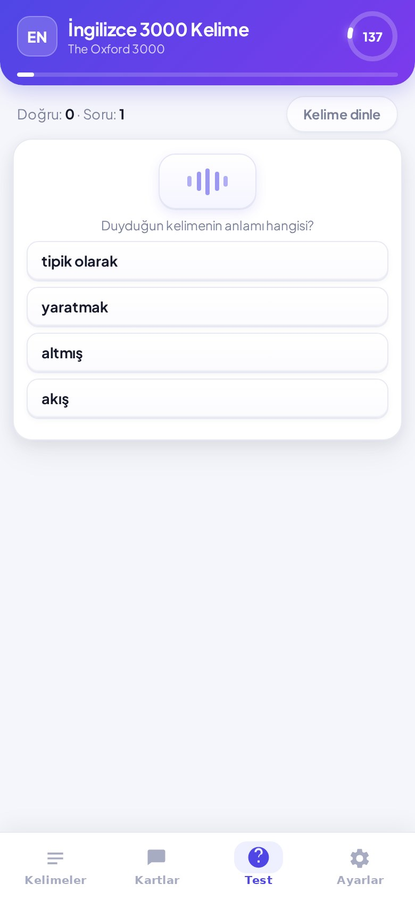
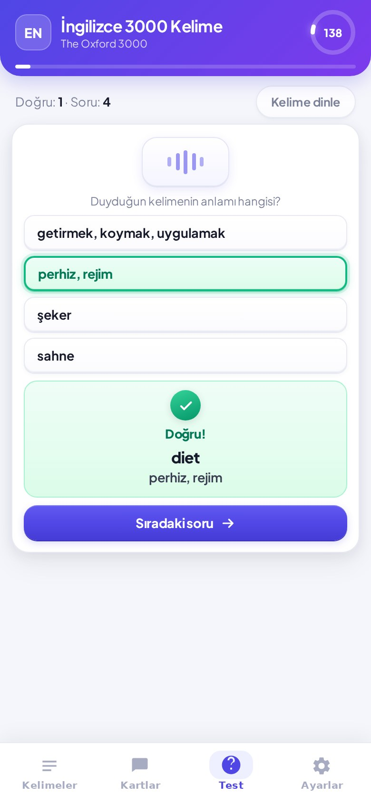
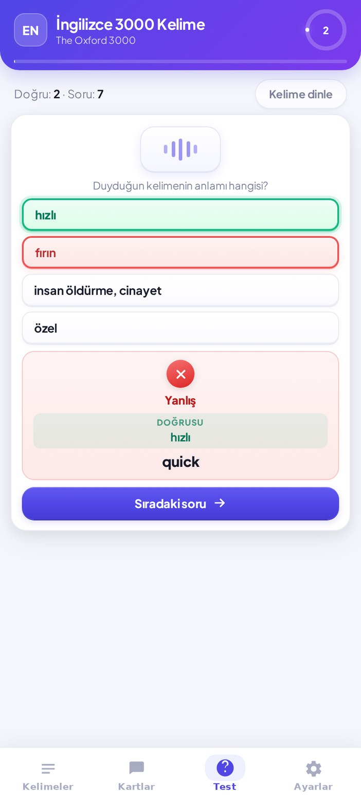
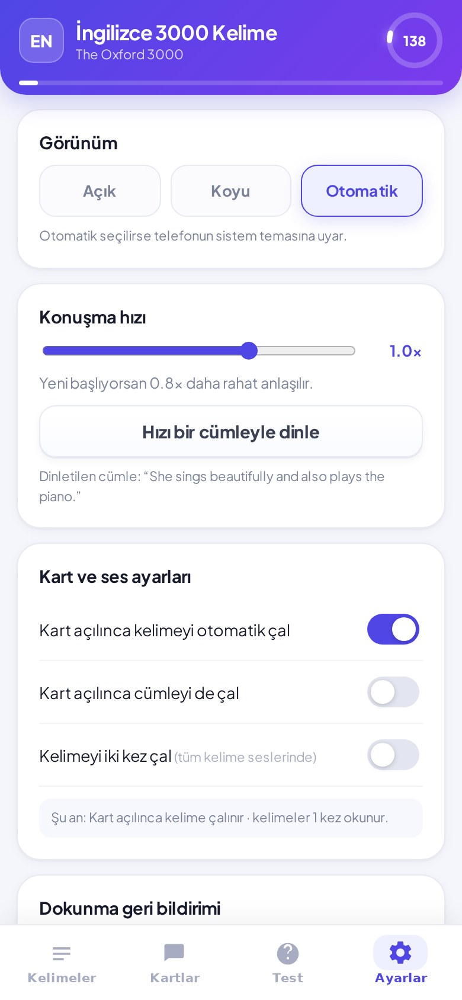
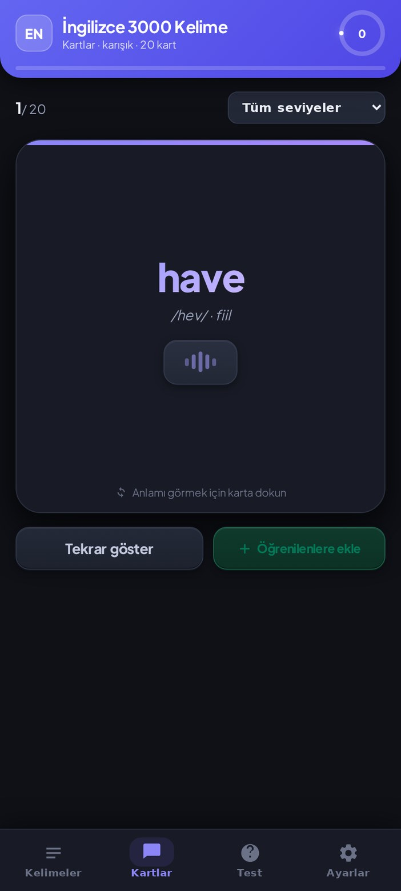
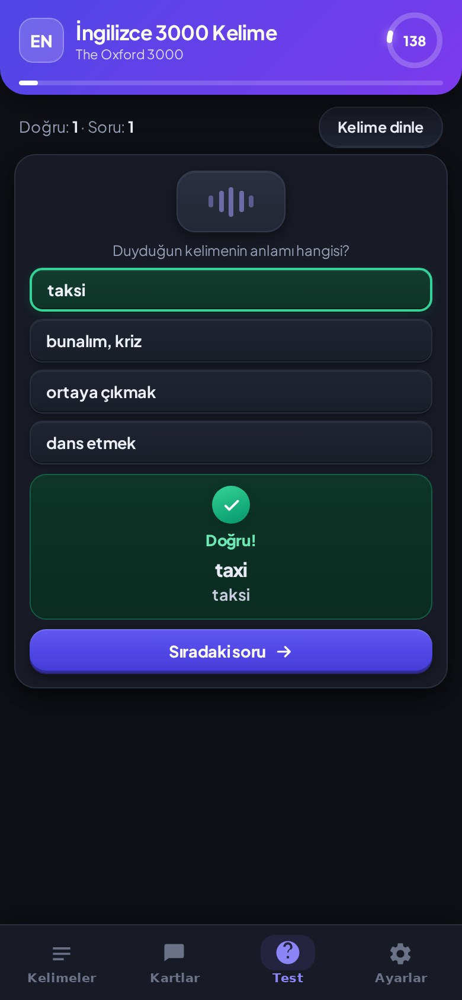

Neler var?
Tek uygulamada kelime öğrenmenin ihtiyaç duyduğunuz her adımı.
Daha temiz ekran
Kelime kartlarında ve testte doğru cevap, üzerinden kayan ışıltıyla öne çıkıyor — kelime hiçbir an kaybolmadan. Aynı ışıltı artık Kartlar bölümündeki İngilizce kelimelerde de var. "Başa dön" düğmesi yalnızca kelime listesinde görünüyor, arama kutusunda tek çarpı var.
Koyu tema
Ayarlar'dan Açık, Koyu veya Otomatik seçebilirsiniz. Otomatik seçilirse telefonunuzun sistem temasına uyar — gece çalışırken gözünüz yorulmaz.
Her kelime sesli
3000 kelimenin tamamı ve örnek cümleleri seslendirildi. Ses kayıtları uygulamanın içinde — internet gerekmez.
Oxford 3000, tam liste
Oxford Üniversitesi'nin en sık kullanılan İngilizce kelime listesi; 2977 farklı kelime + 23 ikinci anlam = 3000 giriş.
Kartlar ve test
Flashcard modunda kendinizi sınayın, test modunda duyduğunuz kelimenin anlamını seçin.
A1–B2 filtreleri
Seviyeye göre çalışın: A1 (905), A2 (801), B1 (695), B2 (599). Türkçe/İngilizce arama desteği.
Öğrenilen ve favoriler
İlerlemeniz kaydedilir; favori kelimelerinizi ayrı listede toplayın.
Kaldığın yerden devam
Liste 3000 kelimeye uzansa da kaybolmazsınız. Listenin başında en son açtığınız kelime durur; tek dokunuşla oraya dönersiniz. Uygulamayı kapatıp açsanız bile aynı satırdan devam eder — konum ve kaldığınız kelime hatırlanır.
Google ile eşitleme
İsteğe bağlı. Tek düğmeyle giriş yapın; öğrendikleriniz, favorileriniz ve kaldığınız yer kendi Google Drive'ınızda saklanır — başka cihazda tam aynı noktadan devam edersiniz.
Seviyeler
Her seviyenin kendi rengi var; seçtiğiniz seviyeye göre başlık ve rozetler renklenir.
Uygulamadan görüntüler
Gerçek ekran görüntüleri.










← Yatay kaydırarak tümünü görebilirsiniz. Görüntüler uygulamanın kendisinden alınmıştır.
Kurulum
Uygulama Google Play dışında, APK dosyası olarak kurulur.
- Yukarıdaki "APK indir" düğmesine basın. Dosya (64,5 MB) telefonunuza indirilir.
- Bildirimlerden veya İndirilenler klasöründen dosyaya dokunun.
- "Bilinmeyen kaynaklara izin ver" uyarısı çıkarsa onaylayın. Bu, Play dışı uygulamalar için Android'in standart güvenlik adımıdır.
- Play Protect "bilinmeyen uygulama" uyarısı verirse "Yine de yükle" seçin. Ayrıntısı aşağıda — uygulama güvenlidir, uyarı yalnızca Play Store'da yayınlanmadığı için çıkar.
- Kur'a basın. Uygulama açılır ve hemen kullanılabilir.
Bu uygulama Google Play Store'da yayınlanmıyor, doğrudan APK olarak dağıtılıyor. Telefonunuzdaki Play Protect yalnızca Play Store'dan yüklenen uygulamaları tanır; bu yüzden ilk kurulumda "Bilinmeyen uygulama" veya "Bu uygulama güvenli olmayabilir" uyarısı gösterebilir. Bu uyarı bir virüs tespiti değildir — sadece "bu yazılımı Google Play üzerinden doğrulamadım" demektir.
Ne yapmalısınız:
- Uyarı ekranında "Yine de yükle" (bazı telefonlarda "Yine de kur" / "Kur") seçeneğine dokunun.
- Böyle bir düğme yoksa: "Ayrıntılar" veya "Daha fazla bilgi" yazısına dokunun, ardından "Yine de yükle" çıkar.
- Ekranın altında "Yükleme engellendi" yazıyorsa: Ayarlar → Güvenlik → Play Protect yolundan "Uygulamaları tara" seçeneğini geçici olarak kapatıp kurulumu tamamlayın, kurulum bittikten sonra tekrar açın.
Neden güvenebilirsiniz: Uygulamanın kaynak kodu herkese açıktır (github.com/SENTOR-X/ingilizce3000), hiçbir reklam, analiz veya izleme yazılımı içermez ve internet izni yalnızca isteğe bağlı Google eşitleme içindir. İsterseniz indirdiğiniz dosyanın bütünlüğünü kendiniz doğrulayabilirsiniz:
117e7b1f698a6a6bbaf330ded9c660366d2ba92e1f4cbc842eb8811d092882d2
67.664.515
·
Sürüm: 2.18.9
Sık sorulanlar
Google hesabıyla giriş zorunlu mu?
Hayır. Uygulamanın tüm özellikleri hesap olmadan çalışır. Google girişi yalnızca ilerlemenizi başka bir cihazda da görmek isterseniz gerekir.
Eşitleme hangi verileri saklıyor?
Öğrendiğiniz kelimeler, favorileriniz ve uygulama ayarlarınız (konuşma hızı, otomatik çalma seçenekleri). Veriler sizin kendi Google Drive'ınızda tek bir dosyada tutulur; uygulamanın sunucusu yoktur.
İnternet gerekiyor mu?
Hayır. Kelime listesi ve tüm ses kayıtları uygulamanın içindedir. İnternet yalnızca Google eşitlemeyi kullanırsanız gerekir.
Ücretli mi? Reklam var mı?
Tamamen ücretsizdir. Reklam, abonelik veya uygulama içi satın alma yoktur. Hiçbir analiz/izleme yazılımı kullanılmaz.
Play Protect uyarısı veriyor, uygulama güvenli mi?
Evet. Uygulama Play Store'da yayınlanmadığı için Play Protect onu tanımıyor ve "bilinmeyen uygulama" olarak işaretliyor. Bu bir virüs uyarısı değil, "bu uygulamayı Google Play üzerinden doğrulamadım" bilgisidir. "Yine de yükle" seçeneğiyle kuruluma devam edebilirsiniz. Kaynak kodu açık, reklam ve izleme yazılımı içermiyor. Ayrıntılı adımlar Kurulum bölümünde.
Play Protect uyarısını kalıcı olarak nasıl kapatırım?
Play Protect'i tamamen kapatmanızı önermiyoruz — telefonunuzu diğer zararlı uygulamalara karşı da koruyan bir sistemdir. Bunun yerine uyarıyı görmezden gelip "Yine de yükle" demeniz yeterli; uyarı yalnızca ilk kurulumda çıkar, uygulama güncellemelerinde tekrar etmez. Yine de kapatmak isterseniz: Ayarlar → Güvenlik → Play Protect → Uygulamaları tara.
Verilerimi nasıl silerim?
Uygulamayı kaldırdığınızda cihazdaki veriler silinir. Buluttaki eşitleme dosyasını Google Hesap izinleri sayfasından uygulamanın erişimini kaldırarak silebilirsiniz. Ayrıntılar: Gizlilik Politikası.
Hemen indirin
3000 kelime, sesli telaffuz, örnek cümleler — hepsi cebinizde, çevrimdışı.
APK indir · 64,5 MB